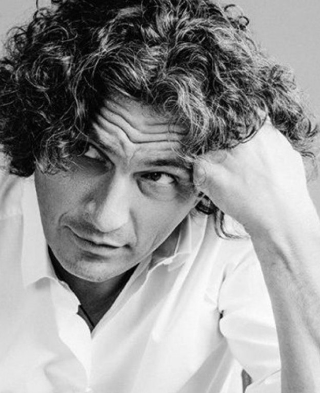
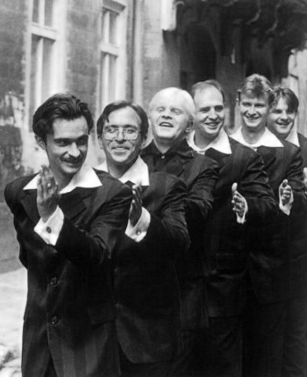

"Океан Ельзи" - багаторазово визнані публікою й критиками як краща рок-група і краща live-група СНД і Східної Європи.
- 
«Скрябін» — український музичний гурт, що за час своєї творчої активності пройшов шлях від синті-попу, постпанку і техно до нової романтики та поп-року.

«Тартак» — український музичний гурт,так щільно посів своє місце в українській музиці, що здається став органічною частиною життя. Жанр - альтернативний рок, репкор панк-рок, реп-рок та фанк.

«СКАЙ» — український музичний гурт, основними трьома напрямками якого є альтернативний рок, поп-рок та риси нової хвилі пост-панку.
"Бумбокс" - український хіп-хоп і фанкі-ґрув гурт, нової генерації із дужу самобутнім виконанням пісень.

«Танок на Майдані Конґо» («ТНМК») — український гурт, що виконує музику в стилях репкор, хіп-хоп, рок та фанк.
- 
«Піккарді́йська Те́рція» (Вокальна формація «Піккардійська Терція») — українська акапельна формація - справжнє явище в українській музичній культурі.